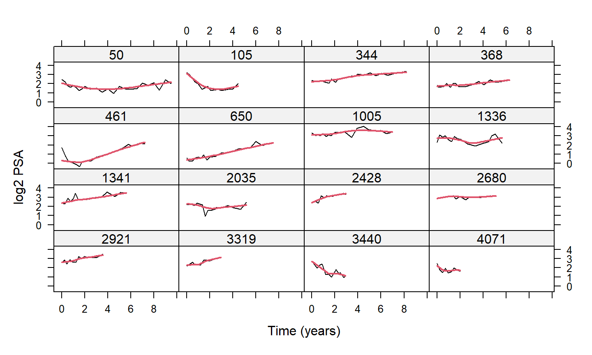
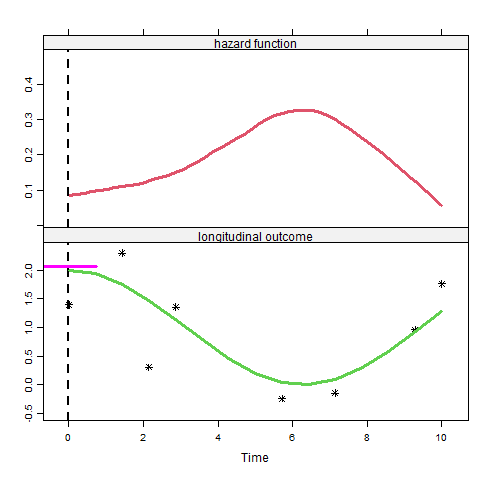
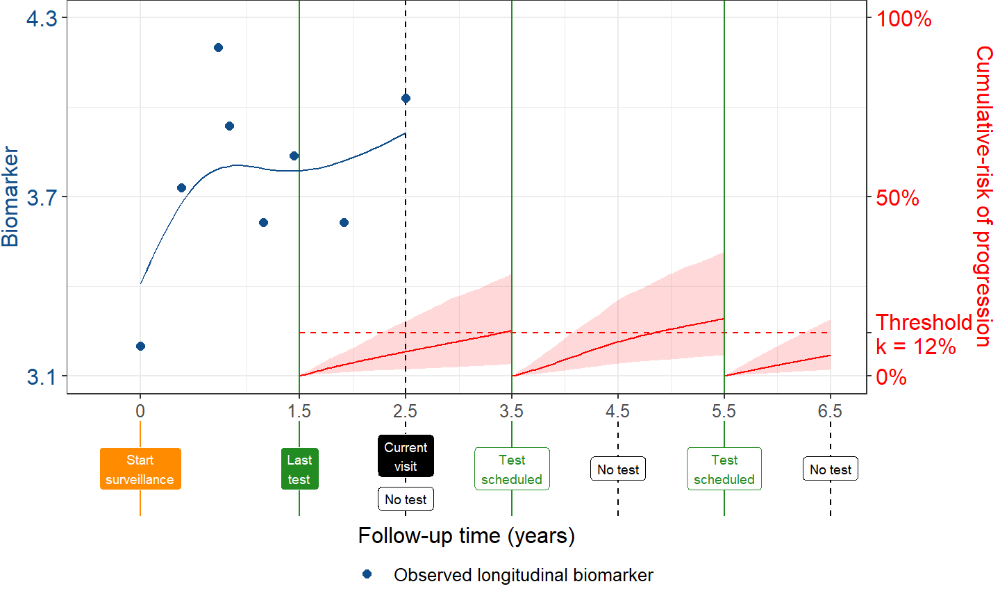

Netherlands Cancer Institute
January 23, 2020
Background & Motivation
Prostate Cancer (PC)
- PC is the 2nd most frequently diagnosed cancer in males worldwide
- the most frequent in economically developed countries
- Many countries run population screening programs using PSA blood tests
- to identify men who have developed the disease
- or men who have high risk of developing it
- However, these programs have resulted to high rates of over-diagnosis and over-treatment
- standard treatments have serious side-effects
Prostate Cancer Active Surveillance
- To avoid over-treatment, men with low grade prostate cancer are advised active surveillance
-
Cancer progression is tracked via:
- Prostate-specific antigen measurements
- Digital rectal examination
- MRI
- Biopsies
Prostate Cancer Active Surveillance (cont’d)
- Treatment is advised when cancer progression is observed
- typically via biopsies when Gleason Score \(\geq 7\)
Frequency of Biopsies
Prostate Cancer Active Surveillance (cont’d)
- Two dimensions
- Frequency of biopsies
- Delay in finding progression
- Delay: We want to find progression asap
- typically delay \(\leq 12-18\) months
- Frequency: Biopsies have high burden
- painful, cause complications, expensive
Biopsies Schedules
- Annual Biopsies
- focus on minimizing delay
- many unnecessary biopsies for patients who progress slow
Biopsies Schedules (cont’d)
- Less Frequent Biopsies - PRIAS
- every 3 years or
- annually if PSA doubling time < 10 (try to find faster progressions)
- still unnecessary biopsies for patients who progress slow
Biopsies Schedules (cont’d)
-
unnecessary biopsies \(\Rightarrow\) Low compliance
- effectiveness of AS is compromised
Considerable room to improve biopsy scheduling
A New Approach: Personalized Scheduling
A New Approach
- Scheduling based on individualized risk predictions
- Progression rate is not only different between patients but also dynamically changes over time for the same patient
- Risk predictions based upon
- All available PSA (ng/mL) measurements
- All available DRE (T1c / above T1c) measurements
- Time and results of previous biopsies
A New Approach (cont’d)

A New Approach (cont’d)

A New Approach (cont’d)
How to better plan biopsies?
- In steps:
- How the longitudinal PSA & DRE are related to Gleason reclassification?
- How to combine previous PSA & DRE measurements and biopsies to predict reclassification?
- When to plan the next biopsy?
Modeling Framework
Time-varying Covariates
- To answer these questions we need to link
- the time to Gleason reclassification (survival outcome)
- the PSA measurements (longitudinal continuous outcome)
- the DRE measurements (longitudinal binary outcome)
- Biomarkers are endogenous time-varying covariates
- their future path depends on previous events
- standard time-varying Cox model not appropriate
Time-varying Covariates (cont’d)
Joint Models for Longitudinal & Survival Data
The Basic Joint Model

The Basic Joint Model (cont’d)
- We need some notation
- \(T_i^*\) the true reclassification time
- \(T_i^L\) last biopsy time point Gleason Score was \(< 7\)
- \(T_i^R\) first biopsy time point Gleason Score was \(\geq 7\)
- \(T_i^R = \infty\) for patients who haven’t been reclassified yet
- \(\mathbf y_{i1}\) vector of longitudinal PSA measurements
- \(\mathcal Y_{i1}(t) = \{y_{i1}(s), 0 \leq s < t\}\)
- \(\mathbf y_{i2}\) vector of longitudinal DRE measurements
- \(\mathcal Y_{i2}(t) = \{y_{i2}(s), 0 \leq s < t\}\)
The Basic Joint Model (cont’d)
\[\left \{
\begin{array}{ccl}
h_i(t) & = & h_0(t) \exp \{\mathbf \gamma^\top \mathbf w_i +
\alpha_1 {\color{red} \eta_{i1}(t)} + \alpha_2 {\color{blue} \eta_{i2}(t)}\}\\&&\\
y_{i1}(t) & = & {\color{red} \eta_{i1}(t)} + \varepsilon_i(t)\\
& = & \mathbf x_{i1}^\top(t) \mathbf \beta_1 +
\mathbf z_{i1}^\top(t) \mathbf b_{i1} + \varepsilon_i(t)\\&&\\
\log\frac{\Pr\{y_{i2}(t) = 1\}}{1 - \Pr\{y_{i2}(t) = 1\}} & = & {\color{blue} \eta_{i2}(t)}\\
& = & \mathbf x_{i2}^\top(t) \mathbf \beta_2 +
\mathbf z_{i2}^\top(t) \mathbf b_{i2}\\&&\\
\mathbf \{b_{i1}, b_{i2}\} \sim \mathcal N(\mathbf 0, \mathbf D), & &
\varepsilon_i(t) \sim \mathcal N(0, \sigma^2)
\end{array}
\right.\]
The Basic Joint Model (cont’d)
- The longitudinal and survival outcomes are jointly modeled \[\begin{eqnarray}
p(y_{i1}, y_{i2}, T_i^L, T_i^R) & = & \int p(y_{i1} \mid {\color{red} b_{i1}}) \; p(y_{i2} \mid {\color{red} b_{i2}}) \times \\
&& \quad \quad
\left\{S(T_i^L \mid {\color{red} b_i}) - S(T_i^R \mid {\color{red} b_i})\right\} p({\color{red} b_i}) \; d{\color{red} b_i}\\
\end{eqnarray}\]
- the random effects \({\color{red} b_i}\) explain the interdependencies
Functional Form
Biomarker’s rate of change
- fast increasing PSA indicative of progression
\[h_i(t) = h_0(t) \exp \{\mathbf \gamma^\top \mathbf w_i + \alpha_1 {\color{red} \eta_{i1}(t)} + \alpha_2 {\color{blue} \eta_{i1}'(t)}\}\]
where \({\color{blue} \eta_{i1}'(t)} = \frac{d}{dt} \eta_{i1}(t)\)
Functional Form (cont’d)

Personalizing the Biopsy Schedules
Risk of Progression
- Using the fitted joint model we can calculate the cumulative risk of progression \[\pi_j(u \mid t, v) = \Pr \bigl \{ T_j^* \leq u \mid T_j^* \geq t, \mathcal Y_{j1}(v), \mathcal Y_{j2}(v) \bigr \}\]
- \(t\) time of last biopsy
- \(v\) time of current visit
- \(u\) future time
- \(\mathcal Y_{j1}(v)\) & \(\mathcal Y_{j2}(v)\) available PSA & DRE measurements up to current visit
Personalized Schedule
- Patients come back every 6 months for PSA & DRE measurements
- at these occasions we want to decide for a biopsy
- In general, we consider decisions at fixed schedule \[\begin{array}{l} s_1, \ldots, s_N\\ s_1 = u\\ s_N = h \end{array}\]
Personalized Schedule (cont’d)
- Simple decision rule: We do a biopsy at \(s_n\) if
\[\pi(s_n \mid t_n, v) \geq \kappa_n\] - where
- \(\kappa_n\) a threshold at \(s_n\)
- \(t_n\) time of last biopsy before \(s_n\)
Personalized Schedule (cont’d)
- The key question is
How do we select \({\color{red} \kappa_n}\)?
Personalized Schedule (cont’d)
- We consider two relevant quantities
- the number of biopsies
- the delay in finding progression
Ideally, we would like to just do one biopsy at exactly the time point of progression
Personalized Schedule (cont’d)
- For different thresholds \(\kappa_n\) we would obtain different number of biopsies and different delays…
- For a specific threshold \(\kappa^*\) we can calculate
- how many times a biopsy will be performed in the future
Personalized Schedule (cont’d)

Personalized Schedule (cont’d)
- The times when biopsies are performed \[t_n = \left\{ \begin{array}{l} t_{n-1} : \pi_j(s_n \mid t_{n - 1}, v) < \kappa^*\\\\ s_n : \pi_j(s_n \mid t_{n - 1}, v) \geq \kappa^*\\ \end{array} \right.\]
- The expected number of biopsies will be \[\mathcal N_j(\kappa^*) = \sum_{n = 1}^N \mbox{I}\{\pi_j(s_n \mid t_n, v) \geq \kappa\} \times \{1 - \pi_j(t_{n-1} \mid t_{n-2}, v)\}\]
Personalized Schedule (cont’d)
- For a specific threshold \(\kappa^*\) we can calculate
- the expected delay \[\begin{array}{lcl} \mathcal D_j(\kappa^*) & = & \sum_{n = 1}^N \bigl \{ s_n - E(T_j^* \mid s_{n-1} \leq T_j^* \leq s_n) \bigr \} \times\\&&\\ && \quad \quad \quad \Pr(s_{n-1} \leq T_j^* \leq s_n) \end{array}\]
Personalized Schedule (cont’d)
- For different \(\kappa\)’s we construct the two-dimensional space of expected number of biopsies and expected delays
Personalized Schedule (cont’d)

Personalized Schedule (cont’d)
- If we consider that the delay & the number of biopsies are equally important
- we can select the \(\kappa_n\) that is closest to the optimal schedule \[{\color{red} \kappa_n^{opt}} = \mbox{argmin}_{\kappa} \sqrt{ \bigl \{ \mathcal N_j(\kappa) - 1 \bigr \}^2 + \mathcal D_j(\kappa)^2}\]
Personalized Schedule (cont’d)
- Othrewise, we may also select a clinically acceptable delay, and select the \(\kappa\) that minimizes the number of biopsies
Personalized Schedule (cont’d)
- An illustration…
Personalized Schedule (cont’d)

Peformance of Personalized Schedules
Simulation
- We…
Simulation (cont’d)
- We…
Simulation (cont’d)

Thank you for your attention!
These slides are available at: